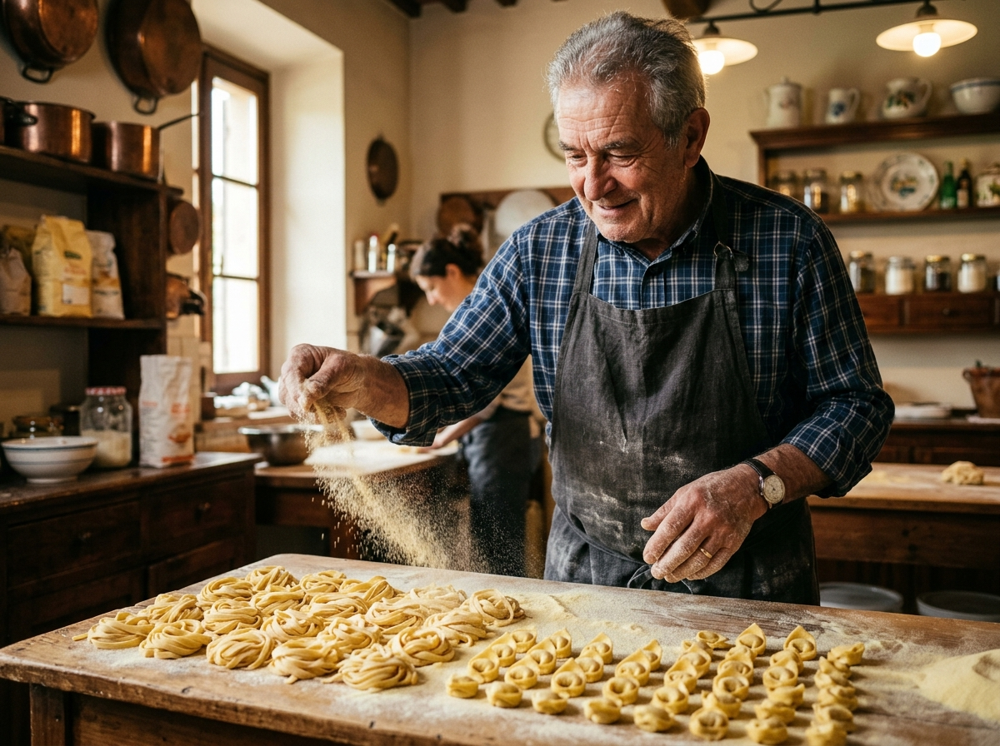
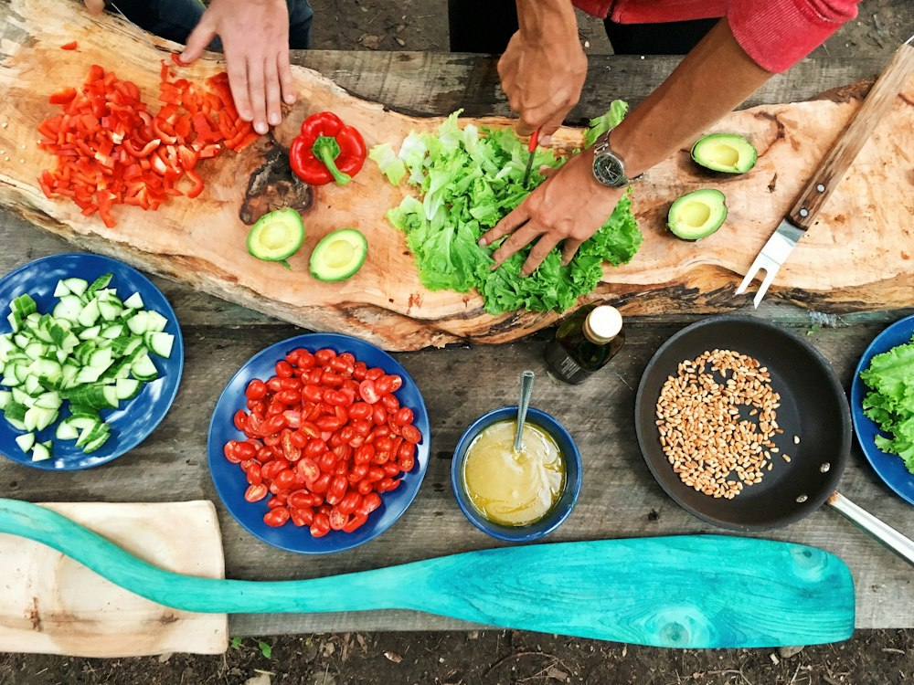

Daily dough hydrations, active bronze dies, and seasonal cellar arrivals from Bologna and Bari — tracked live from our wooden tables.

In authentic Italian tradition, pasta geometry is never arbitrary. Each curve, ridge, hollow, and curl is engineered to pair scientifically with specific sauce viscosity.

Wide ribbons with a coarse, porous surface designed to hug rich pork and veal ragù bolognese without letting sauce slide off.
Explore Ribbon Cut
Cone-shaped florets with fluted ruffled petals that capture chunky sausage, roasted sweet peppers, and creamy mascarpone sauces.
Explore Shaped Cut
Little ear-shaped discs with a smooth concave cup and rough exterior, traditionally tossed with rapini greens, chili, and anchovies.
Explore Regional Cut
Larger than tortellini, filled with fresh cow's milk ricotta, lemon zest, and nutmeg, hand-folded into regal crowned knots.
Explore Filled Pasta
"Customers always ask what I take home to my own family on Tuesday evenings. Here are three pairings that showcase why simplicity reigns supreme in Italian cooking."
Square-cut chitarra strands tossed with sweet crushed San Marzano tomatoes, torn Genovese basil, and a generous drizzle of green Coratina olive oil.
Tiny hand-pinched Piedmontese parcels filled with braised beef and veal, dressed in reduced roast roasting juices and fresh rosemary.
Our cloud-like potato gnocchi stirred into mortar-ground Pra' basil pesto, pine nuts, garlic, and 24-month Parmigiano Reggiano.
A window into the quiet, meticulous dawn rituals that give our handmade pasta its world-renowned texture and golden character.

Our dough masters create the traditional fontana (flour well) on raw beechwood tables, cracking deep-orange yolks from local pasture-raised hens directly into the center.

Solid bronze dies press coarse dough under controlled pressure. The friction creates microscopic ridges, ensuring the pasta never feels slick or industrially smooth.

Each nest is coiled by hand, dusted with coarse semola to prevent sticking, and placed into breathable kraft trays ready for morning shoppers and local trattoria orders.

A great plate of pasta deserves an equally extraordinary antipasto. Our deli counter is stocked with artisanal charcuterie sliced paper-thin to order, aged sheep and cow's milk cheeses, and house-marinated delicacies.
View All Deli Cheeses & MeatsLet our chefs take care of the cooking. From intimate Sunday family feasts to grand 150-guest corporate banquets, our catering packages deliver hot, unforgettable Italian food.
Full pan of deep-dish lasagna al forno or baked ziti, mixed green insalata della casa, whole rosemary focaccia, and fresh cannoli dessert box.
Reserve PackageTwo pasta platters (Tagliatelle al Ragù & Ricotta Ravioli), large antipasti misti charcuterie board, Caprese salad, hot focaccia, and tiramisù trays.
Reserve PackageFull chafing buffet setup, three artisan pasta options, seasonal roast vegetables, charcuterie bar, sparkling San Pellegrino waters, and event staff support.
Request Custom QuoteRated 4.9 / 5 Stars across 650+ verified local neighborhood reviews.
"The squid ink fettuccine with garlic prawns has become our Friday date night ritual. Nothing comes close to this freshness."
— David K., Food Blogger"The catering platter for our office team was delivered hot, on time, and completely devoured within 20 minutes."
— Sarah L., Studio Producer"The cheese counter alone is worth a visit. Aged Parmigiano broken with the almond knife right in front of you!"
— Lorenzo G., Local Chef"Authentic Italian hospitality. Maestro Giancarlo took the time to explain how to properly salt pasta water. 10/10!"
— Maria T., Home CookPick up fresh pasta and house-simmered sauces at our market deli counter, or reserve custom catering trays for your upcoming event.